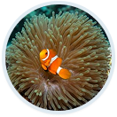
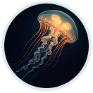
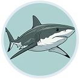
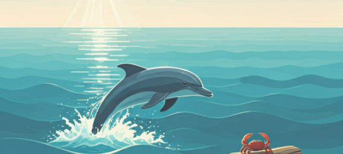
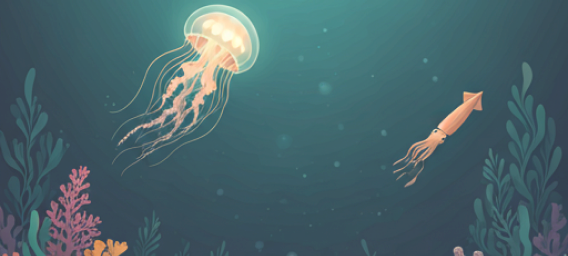
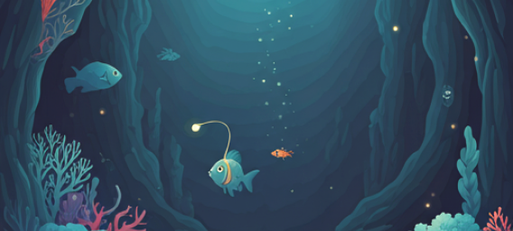
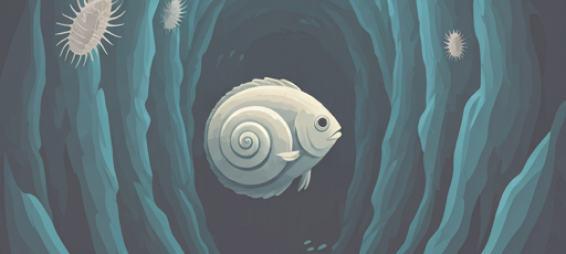

Discovered Species

Clownfish
Sea turtle
Stingray

Jellyfish
Octopus

Shark
Explore Ocean Depths
The Sunlit Surface
The epipelagic zone receives ample sunlight, fueling photosynthesis and supporting the majority of ocean life, including playful dolphins and coastal crabs.
0m Depth Range
The Twilight Zone
Sunlight rapidly fades in the mesopelagic zone. Bioluminescence begins to appear as glowing jellyfish and squid navigate the dim, cool waters.
~200m Depth Range
The Abyss
Complete darkness and immense pressure characterize the bathypelagic zone. Strange creatures like the Anglerfish use bioluminescent lures to survive.
~1000m Depth Range
The Mariana Trench
The hadalpelagic zone, the deepest trenches on Earth. Pitch black and near-freezing, home to highly specialized lifeforms like the snailfish.
~2000m+ Depth Range